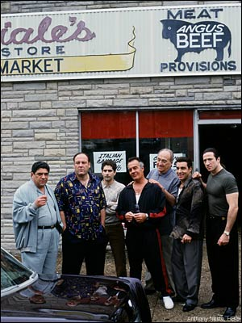
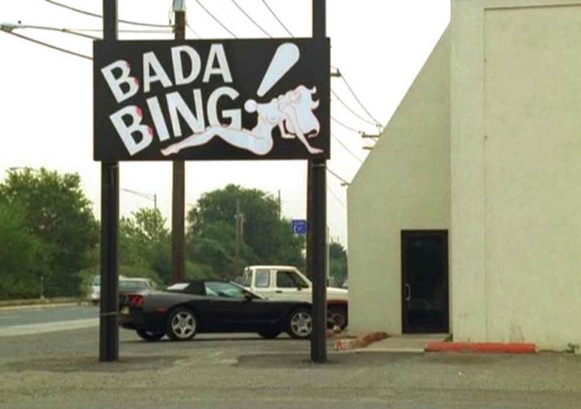
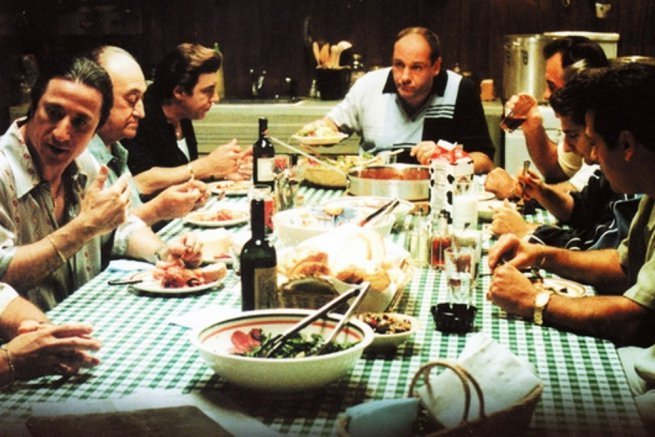

Escenarios y localizaciones
La carnicería, uno de los lugares favoritos de los mafiosos en la serie, era conocida en el episodio piloto como Centanni's Meat Market, una carnicería real en Elizabeth, Nueva Jersey. Después de que la serie fuera contratada por HBO, los productores arrendaron un edificio en Kearny, Nueva Jersey. Durante el resto del periodo de producción, este edificio fue utilizado para escenas de rodaje tanto en interior como en exterior Satriale's. Cuando la serie finalizó su emisión, el edificio fue demolido.
El Bada Bing!, un club de striptease del que Silvio Dante era propietario en la serie, es en realidad un club nocturno en la Ruta 17 en Lodi, Nueva Jersey. Los exteriores e interiores (excepto el cuarto que servía de trastienda) fueron filmados en el propio local. El club actual se llama Satin Dolls y ya existía antes de que la serie comenzara. El club continuó con su funcionamiento habitual durante los ocho años que duró la serie, pero se llegó a un acuerdo económico con el propietario del establecimiento previamente. El responsable de escenarios, Mark Kamine, aseguró que el propietario fue "muy amable", pues mientras la serie permaneció en antena "no hubo ningún conflicto que interfiriera en su negocio".
Las escenas que tenían lugar en el restaurante Vesubio, propiedad en la serie de Artie Bucco, se filmaron en el primer episodio en un restaurante llamado Manolo's, situado en Elizabeth. Tras el incendio del Vesubio, dentro del contexto de la serie, Artie abrió un nuevo restaurante llamado Nuovo Vesubio, cuyas escenas exteriores se filmaron en Punta Dura, un restaurante real de Long Island City, en Queens.
Por otra parte, los exteriores de la residencia de ancianos Green Grove, donde Tony lleva a su madre Livia, se grabaron en Green Hill Retirement Home, una residencia de ancianos de West Orange. Todas las filmaciones exteriores, y algunas interiores, de la casa de los Soprano fueron realizadas en una residencia privada en North Caldwell, Nueva Jersey.